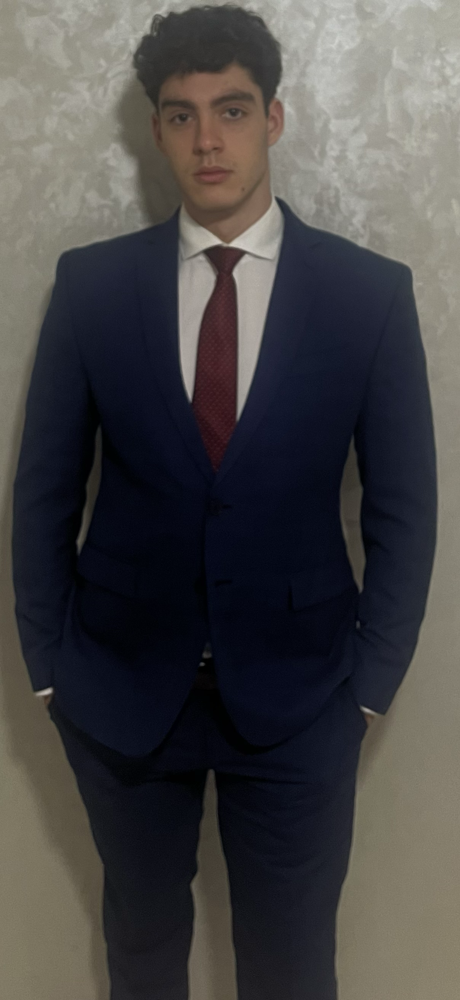

Hey, There
SOFTWARE DEVELOPER AND DESIGNER

WHAT I HAVE TO OFFER
I'm a versatile full-stack developer and designer, with expertise in web development, UI/UX design, and systems implementation. Currently pursuing a triple major in Computer Science, Data Science, and Graphic Design at Augustana College, I’m passionate about creating scalable, user-centric software.